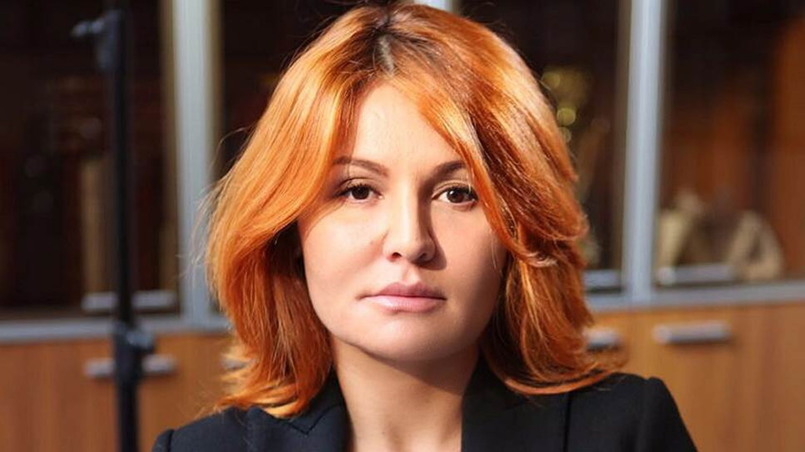

Вице-президент агрокомплекса Мортадель
Станция Кумшагал Джамбульской области
Образование
ВУЗ неизвестен.
Специальность: юрист.
До 2013 года:
Научный сотрудник по разработке законодательства в области атомной энергетики в Научно-исследовательском институте "Атоминформ".
2013 год - по настоящее время:
топ-менеджер в агропромышленном комплексе "Мортадель".
Социальная политика
- Защита детей от социального неравенства в школьные годы.
- Поддержка многодетных и молодых семей.
Национальная оборона
Отсутствие захватнических компаний и поддержка армии. Миротворческие операции
Национальная экономика
- Снижение цен на продовольственные товары.
- Разовые амнистии кредитов для физлиц ниже 100 тысяч рублей.
Национальная безопасность и правоохранительная сфера
Не высказывалась.
Государственный аппарат
Введение присяги при поступлении на государственную службу.
Развитие регионов
Не высказывалась.
Налоги
Не высказывалась.
Образование
Не высказывалась.
Здравоохранение
Улучшение и доступность медицинского обслуживания.
Культура, кинематография
Не высказывалась.
СМИ
Не высказывалась.
Физкультура и спорт
Не высказывалась.
ЖКХ
Не высказывалась.
Охрана окружающей среды
Не высказывалась.